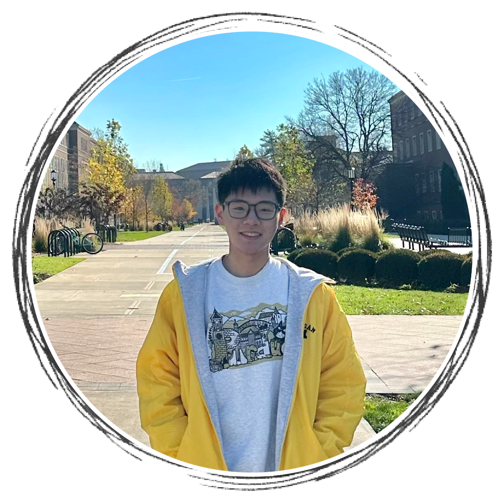

About
My name is Jiongyu (Johnny) Chen. I am currently a master's student majoring in Information Science/Studies with a track in UX Research and Design at University of Michigan.
I am a person full of curiosity, with professional knowledge and skills in fields such as interaction design, web design, programming, extended reality, psychology, and sociology. I try to integrate everything I have learned and pursue a full-time career in the field of UX. If you are interested in knowing more about me, feel free to contact me!
Education
- M.S. in Information Science/Studies, University of Michigan, 2023-2025
- B.S. in Psychological Sciences, Purdue University, 2019-2022
- B.A. in Sociology, Purdue University, 2019-2022